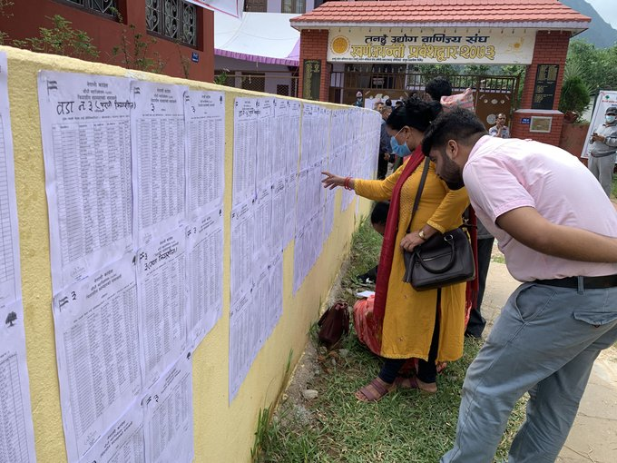

नेपाली कांग्रेसको चौधौँ महाधिवेशनअन्तर्गत शनिबार तनहुँको व्यास नगरपालिकाको अधिवेशनका लागि टाँस गरिएको मतदाता नामावली हेर्दै कार्यकर्ता । तस्वीर : रासस

राइड सेयरिङ प्लेटफर्म पठाओ चौथो वर्षमा प्रवेश
काठमाण्डाै - समय क्रमसँगै जीवनशैलीलाई अझ सहज र सुरक्षित बनाउन सफल राइड सेयरिङ प्लेटफर्म पठाओ नेपालको व्यावसायिक यात्रा सुरु भएको ३ वर्ष पूरा भएको छ । २५ सेप्टेम्बर २०१८ मा बाइकमा राइड सेयरिङमार्फत पठाओले सेवा सुरु गरेकाे थियो ।
ujyaaloonline.com